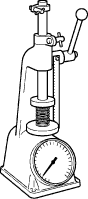
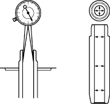
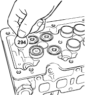

Valve Spring Tension Measurement
- Use a spring tester to measure the valve spring tension. If the measured value is less than the specified limit, the valve spring must be replaced.
Valve spring tension:
Compressed height:
33.3 mm (1.31 in.)
Standard:
160 N (16.3 kgf, 73 lbf)

Valve Guide Measurement
- Measure the valve stem outside diameter. Refer to the item ''Valve Stem Outside Diameter''. Use a caliper calibrator or a telescoping gauge to measure the valve guide inside diameter. If the measured values exceed the specified limit, the valve and the valve guide must be replaced as a set.
Valve stem clearance:
Intake valve:
Standard:
0.023 – 0.056 mm (0.001 – 0.002 in.)
Limit:
0.080 mm (0.0031 in.)
Exhaust valve:
Standard:
0.028 – 0.061 mm (0.001 – 0.002 in.)
Limit:
0.095 mm (0.0037 in.)

Tappet and Adjust Shim Inspection
- Visually inspect the shim camshaft contact surfaces for pitting, cracking and other abnormal conditions. The tappet must be replaced if any of these conditions are present.
